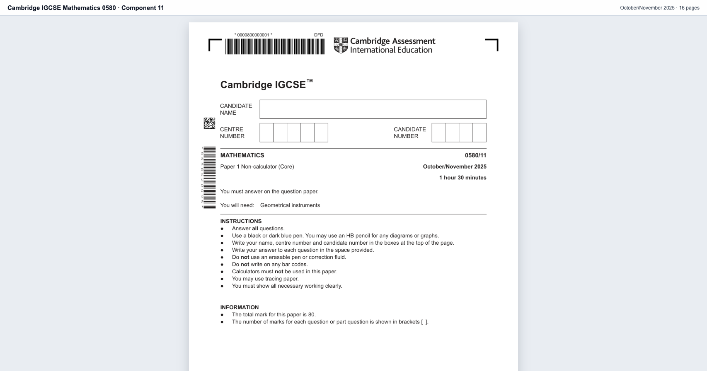
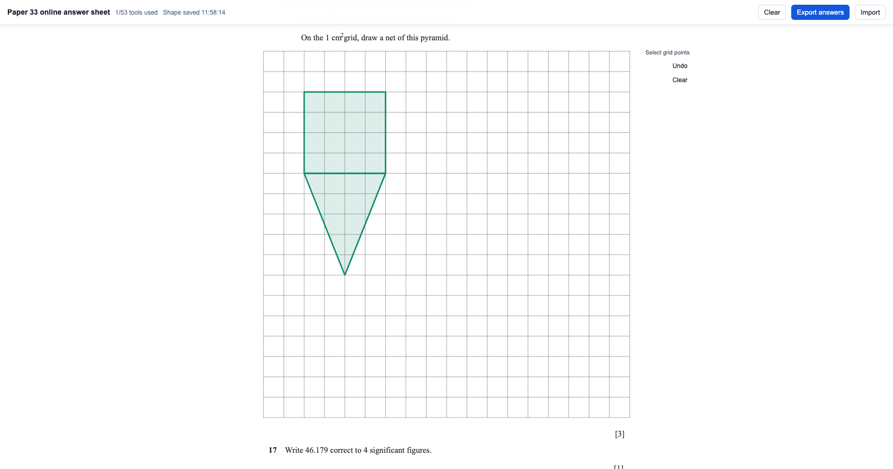
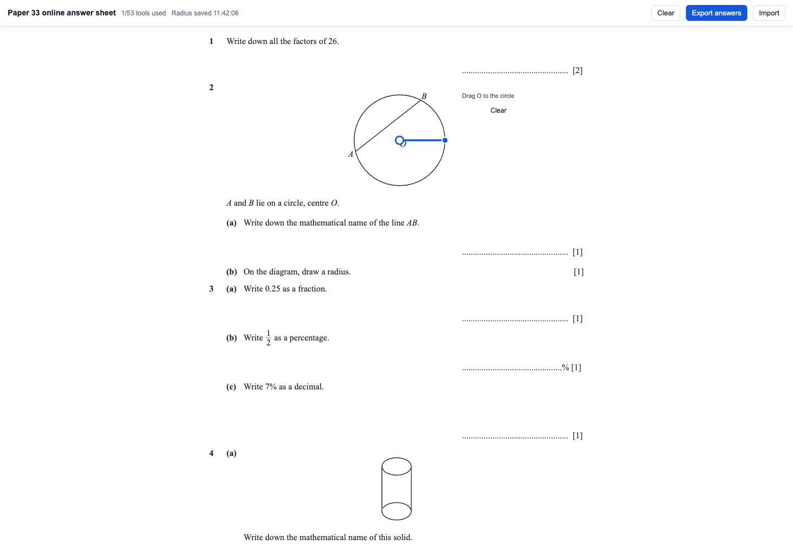

学生刷题很多，成绩仍然不稳
他们不知道问题是知识点、读题、建模、计算、时间管理，还是考试表达。错题被收集了，但没有被修复。
EduGraph AI 从数学考试备考切入，把练习、批改、诊断、训练和报告连接成一个学习证据闭环。它不是再做一个题库，而是让学生、家长、教师和机构都看见“为什么错、差在哪里、下一步练什么”。
The Pain
学生、家长、教师和机构都被“分数”困住。分数告诉你发生了什么，却没有解释为什么发生，也没有自动生成下一步该做什么。
他们不知道问题是知识点、读题、建模、计算、时间管理，还是考试表达。错题被收集了，但没有被修复。
65 分不是诊断。家长真正需要知道的是孩子为什么丢分、离目标 Grade 差多少、在家能做什么。
一套卷子批完，真正困难的是把班级共性错误变成分层练习、讲评重点和后续追踪。
诊断、Mock、家长沟通和后续练习一旦不能产品化，就很难稳定交付，也很难复制到更多学生。
The Answer
普通 AI 教育产品在回答问题，EduGraph AI 在沉淀证据。它把一次作答拆成知识、技能、题型、错误模式、评分点、用时和再测结果，再用图谱和学生状态引擎推动下一步训练。
核心判断：谁能持续理解学生为什么错，谁就能控制训练路径、报告价值和长期教育数据资产。
The Loop
EduGraph AI 的产品闭环不止“批改后给建议”。它要把学习数据进入平台后的每一步都结构化，直到训练结果再次回流系统。
学生完成练习、Mock Test 或上传解题步骤，系统收集答案、用时、题型和评分结果。
一次作答被拆解为知识点、能力、错误类型、Mark Scheme 对齐和再测结果。
学生状态引擎判断掌握度、薄弱点、目标 Grade 差距、风险点和考试准备度。
考试内容引擎生成错题修复、专项练习、Mini Quiz、Mock Paper、解析和评分标准。
系统给出分数、失分原因、改进建议，并把新证据同步回学生画像。
学生获得任务，家长看懂问题，教师发现班级共性弱点，机构形成标准化服务。
How It Works
用真实考试材料、评分依据、学习状态和报告输出建立信任。EduGraph AI 的界面重点不是炫技，而是把“下一步行动”变得明确。

Past Paper、Mark Scheme、题型结构和学生作答不再是分散材料，而是证据链的入口。

知识点、技能、评分点和错误模式被结构化，方便后续生成错题修复和再测任务。
把“分数”还原成掌握度、风险点和目标差距。
把复杂学习数据翻译成家长能理解的行动建议。
建议本周优先修复函数图像、圆周角和长题表达，完成 3 组再测任务后更新目标 Grade 差距。

题目不只是被展示，而是可以被操作、批改、诊断、修复和再次验证。
Market Wedge
大愿景不能从第一天就做成泛教育平台。EduGraph AI 先用数学考试备考验证付费和闭环，再把能力复制到机构、学校和生态接口。
诊断测试、个性化练习、Mock Test、错题修复、家长报告和考前冲刺包。
批量诊断、学生管理 Dashboard、Mock 管理、分层练习和报告导出。
班级分析、年级趋势、教师备课工具、自动批改和教学干预建议。
题库生成、自动批改、学习诊断、报告 API 和教育平台私有化合作。
Who Pays
EduGraph AI 不用一开始同时卖所有模式，但要让每个角色都看到自己的明确收益。
不再盲目刷题，而是知道自己为什么错、下一步练什么、如何接近目标 Grade。
个性化练习账户 / 错题修复包 / 考前冲刺包看懂孩子真实问题，而不是只看到一个分数；获得可执行的家庭支持建议。
家长报告订阅 / 阶段诊断 / 目标差距报告快速发现班级共性弱点，生成分层练习、讲评重点和教学干预材料。
备课工具 / 班级分析 / Worksheet / Quiz把学生评估、Mock Test 和家长报告标准化，降低人工诊断成本。
机构 SaaS / 学生管理 Dashboard / 报告导出从结果管理走向过程管理，支持风险预警、教学质量提升和干预效果追踪。
学校 Licence / 年级 Dashboard / 教学干预报告把 EduGraph AI 的题库、批改、诊断和报告能力集成进现有学习系统。
API 调用 / 白标合作 / 内容服务Why It Compounds
学生练习越多，系统越了解学生；Mock 越多，考试准备度预测越可靠；教师审核越多，题目和评分越精准；训练效果越多，推荐路径越有效。
现在很多学生刷了大量题，但成绩提升并不稳定。家长只看到分数，却很难知道孩子真正的问题是读题、建模、计算、知识点、题型策略还是考试表达。EduGraph AI 从 IGCSE / GCSE Maths、11+ Maths 和入学考试等高需求场景切入，把学生答案、解题步骤、用时、错误类型、Mark Scheme 对齐和再测结果转化为学习证据，再通过学习证据图谱和学生状态引擎判断薄弱点，由考试内容引擎生成练习、错题修复、Mock Paper、解析和报告。我们的核心卖点不是提供更多题，而是让每一次作答都变成下一次提分的依据。